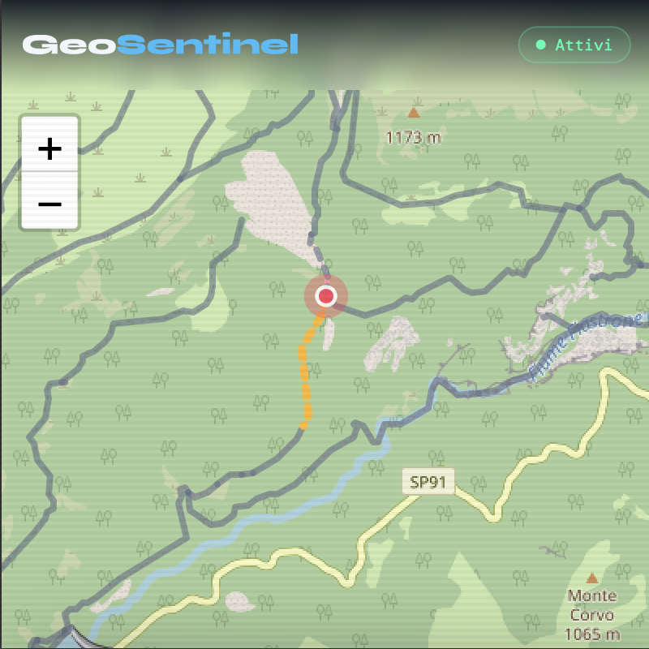

satellite_alt
Safety from Space.
Precision on the Trail.
GeoHike is a web service that calculates a geo-hydrological risk index for hiking trails by combining three components: historical risk based on slide history, soil moisture from Sentinel-1 SAR, and real-time precipitation data and weather changes.
Live Orbital Feed
Active

Satellite Lat/Long
45.8327° N, 6.8650° E
Terrain Status
Secure Pass